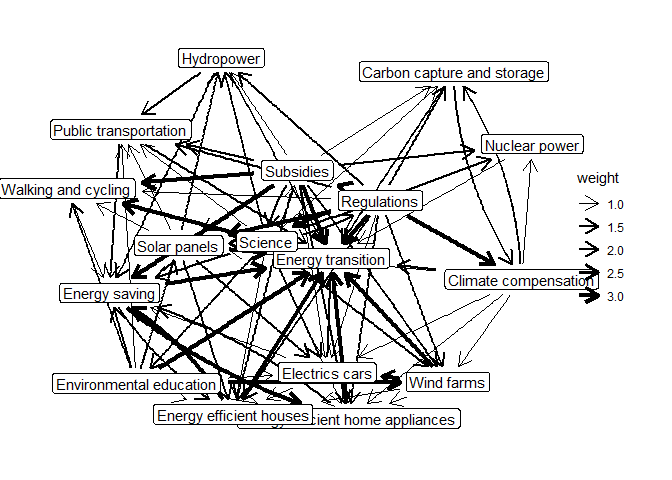

MToolR is a companion package for the Mental Model Mapping Tool M-Tool (https://www.m-tool.org/). The package provides: a) functionality to load and process data generated by M-Tool b) procedures for common (basic) analytical tasks c) visualization functions
⚠️ This package is at a relatively solid beta stage, with some documentation lacking. Further features are planned. We welcome feedback. ⚠️
Installation
You can install the development version of MToolR from GitHub with:
# install.packages("devtools")
devtools::install_github("marioangst/MToolR")Example 1: Read in .csv file exported from M-Tool, visualize a user model and calculate some statistics for the user
Say you have exported a file called “example_export.csv” from M-Tool and have saved it in a folder data-raw/. Here is how to read it into R and create a first plot for a random user.
library(MToolR)
#> MToolR is a companion package for the Mental Model Mapping Tool M-Tool (https://www.m-tool.org/)
#>
#> Wouter van Boxtel wrote the initial scripts that inspired the functionality of this package. Thanks Wouter ;)!
#>
#> This package is under development. Use at your own risk. Help us by reporting bugs and create feature requests here: https://github.com/marioangst/MToolR/issues
mentalmodels <-
MToolR::mentalmodel_from_csv("data-raw/example_export.csv",
exclude_nonresponse = TRUE)
plot(mentalmodels, user = "ad84c4ed-b73e-4ba2-8e1f-edbe365bb225")
The mental models of users are stored as igraph graph objects for each user. This makes it possible to calculate almost any network statistic imaginable by retrieving the graph.
g <- get_user_graph(user = "ad84c4ed-b73e-4ba2-8e1f-edbe365bb225",
x = mentalmodels)
g
#> IGRAPH 8f1ab47 DNW- 17 14 --
#> + attr: name (v/c), Weight (e/n), weight (e/n)
#> + edges from 8f1ab47 (vertex names):
#> [1] Hydropower ->Energy transition
#> [2] Climate compensation ->Nuclear power
#> [3] Environmental education->Energy efficient home appliances
#> [4] Subsidies ->Electrics cars
#> [5] Environmental education->Walking and cycling
#> [6] Science ->Wind farms
#> [7] Nuclear power ->Energy transition
#> [8] Electrics cars ->Energy efficient houses
#> + ... omitted several edgesWe have implemented some simple descriptive statistics in a convenience function already:
calculate_descriptive_statistics(mentalmodel = mentalmodels)
#> # A tibble: 901 x 6
#> concept w_betweenness w_in_d~1 w_out~2 w_tot~3 user
#> <chr> <dbl> <dbl> <dbl> <dbl> <chr>
#> 1 Energy transition 0 3 0 3 d20f~
#> 2 Climate compensation 0 0 0 0 d20f~
#> 3 Wind farms 0 3 0 3 d20f~
#> 4 Hydropower 0 0 0 0 d20f~
#> 5 Nuclear power 0 0 0 0 d20f~
#> 6 Carbon capture and storage 0 0 1 1 d20f~
#> 7 Regulations 0 0 1 1 d20f~
#> 8 Energy saving 0 0 0 0 d20f~
#> 9 Walking and cycling 0 0 0 0 d20f~
#> 10 Energy efficient home appliances 0 0 1 1 d20f~
#> # ... with 891 more rows, and abbreviated variable names 1: w_in_degree,
#> # 2: w_out_degree, 3: w_total_degreeExample 2: Similarities between mental models
It can be interesting to explore how similar the mental models of different users are. MToolR implements a function to do so, based on different graph similiarity metrics and which can also calculate similarities within different user groups.
Let’s calculate the similarity matrix for the mental models of all users in our example dataset.
sim_mat <- get_model_sims(mentalmodel = mentalmodels)The raw similarity matrix can the be further processed in many possible ways, for example as an input to a clustering algorithm to find groups of users with similar mental models. We’ll plot a quick heatmap here, to show what is possible.
heatmap(sim_mat)
In case you are wondering: There is very little similarity between user mental models in this example data because we randomly shuffled user IDs to anonymize the date ;)
Example 3: Aggregate models and calculate descriptive statistics
Often it is interesting to explore aggregated models of all M-Tool respondents - a sort of meta-model.
Let’s first aggregate mental models using median edge weights and plot the aggregated model.
mentalmodels_agg <- aggregate_mentalmodel(mentalmodels)
plot(mentalmodels_agg)
#> Using "stress" as default layout
We can then also calculate some descriptive statistics for the aggregated model.
calculate_descriptive_statistics(mentalmodels_agg)
#> # A tibble: 17 x 5
#> concept w_betweenness w_in_degree w_out_de~1 w_tot~2
#> <chr> <dbl> <dbl> <dbl> <dbl>
#> 1 Energy transition 0 16 0 16
#> 2 Climate compensation 16.5 3 10 13
#> 3 Wind farms 0 5 6 11
#> 4 Hydropower 0 5 3 8
#> 5 Nuclear power 1 4 2 6
#> 6 Carbon capture and storage 1 4 2 6
#> 7 Regulations 2.5 1 16 17
#> 8 Energy saving 15 11 4 15
#> 9 Walking and cycling 2.5 6 2 8
#> 10 Energy efficient home appliances 3 9 3 12
#> 11 Energy efficient houses 3.5 10 3 13
#> 12 Subsidies 0 2 14 16
#> 13 Public transportation 4.33 8 2 10
#> 14 Electrics cars 3.33 7 3 10
#> 15 Environmental education 0 3 10 13
#> 16 Solar panels 3 5 7 12
#> 17 Science 14.5 4 16 20
#> # ... with abbreviated variable names 1: w_out_degree, 2: w_total_degreeExample 4: Add additional data on users
Often, we might have collected additional data on users providing mental models. We can add this data to a mtoolr object using add_user_data().
Here, we are just going to simulate some data. It’s important that our user data contains a column matching users to their M-Tool user id.
# simulate user data to add
user_df <- data.frame(id = example_models$user_data$id,
user_likes_bicycles = rbinom(length(example_models$user_data$id),
size = 1,prob = 0.5))
user_df
#> id user_likes_bicycles
#> 1 d20f0ed5-da33-4e99-804e-39fb03cf8f3c 1
#> 2 ad84c4ed-b73e-4ba2-8e1f-edbe365bb225 1
#> 3 e666b731-3781-4cc5-9bcb-cf683468ab48 0
#> 4 10ecf726-69a7-48c9-9494-faa951cfddb5 0
#> 5 8ab84278-f345-4c06-abdc-3defa589635b 1
#> 6 8a770b29-a8e3-423a-b35f-9484fb91215f 1
#> 7 d6fd9156-10e3-4122-9094-1031230bd3e8 1
#> 8 b958c876-dbdc-4b91-9532-aba2ffb49831 0
#> 9 fd3490ab-badc-4b82-880f-fdbd23321b7a 1
#> 10 e3767096-8b09-4c04-870c-e4a27cc7d359 1
#> 11 249711de-4e53-46a5-a6f3-8a64d057d1c0 1
#> 12 6f5873ab-f3f7-46cf-a3da-b7e4f6e5f38c 0
#> 13 3db53adc-5091-4f53-8dc6-75b2981c7f74 1
#> 14 c2794e78-f474-4b47-b536-69d8eea28572 1
#> 15 aa9961a2-4612-4f2c-a0f7-d2970d45db9f 1
#> 16 da61c7d7-0681-43c4-b309-f9b587fec0c0 1
#> 17 5c1d0822-f123-47e0-9888-506b33292274 1
#> 18 678d7690-58f6-466b-b9b1-884241a08c26 0
#> 19 096fc61c-31d1-460f-a80e-d9ef9ea163f7 1
#> 20 ca8085e1-88fa-462f-8f66-9806dab84fbb 0
#> 21 d6fbc14d-192d-4d1d-823d-c86b6ee52323 1
#> 22 b29bd5fb-437f-40b4-be61-2080e52f3569 0
#> 23 a2f8042e-6368-433c-89a0-2d88c52c6525 0
#> 24 baa97cfe-6fa5-4b9c-84c6-cbe6c2226a26 1
#> 25 5fdf5459-a756-40d0-9b97-3756d8267da2 1
#> 26 54881284-1b02-4b3f-ae77-053c137e6248 0
#> 27 4740a85d-ff80-41c8-bc69-1bb03e942b6c 0
#> 28 15b0ef09-c617-4423-9f5c-b279b3ebfa31 0
#> 29 5b61d8dc-1a4f-48f2-8292-a00127c028db 1
#> 30 8e73722e-d9d2-4bc2-96b6-2dd1943efae7 0
#> 31 0f8b2831-6300-4933-be3c-b88f2b576fbf 1
#> 32 0e0747b9-0e4b-4a9f-899d-b40c40529491 1
#> 33 63be5401-9995-48bc-a79b-89eb0d23cb60 1
#> 34 7f77e9b8-cdf3-4905-9dd0-4d8f894ad9c8 0
#> 35 5d74dd99-17cf-4b31-97bb-5bef682c0699 1
#> 36 2a273314-76b5-43a0-981f-17da36717db7 0
#> 37 bc9298c2-68f2-40ae-bc54-312d1ff030c9 0
#> 38 e17f7edd-74c8-4d58-8adb-1040685b9557 0
#> 39 c40610ea-0f3f-453f-a3e1-4eedf920f19c 1
#> 40 5444b749-8abc-499d-9f7a-69243ede8241 0
#> 41 10d933a6-5204-4acd-a23a-b37c5a00d3d3 0
#> 42 f1998b71-1a91-441c-b774-fe7ea84bd53f 1
#> 43 0396c224-7496-4fa0-a58a-79bca24ea01c 0
#> 44 cbc68d75-23b8-4fef-9cef-c71fa9f7f088 0
#> 45 abdac19a-ecb3-49b9-a42f-431334559394 0
#> 46 8603ea77-7115-4ed1-bcab-ffff206d8347 0
#> 47 440251d2-757d-4a81-bfda-1a7fdc1f936d 1
#> 48 199385bf-f2bd-42c9-8451-df8b8843d53b 0
#> 49 843a23bd-79bd-4970-9697-dca89efcdc27 0
#> 50 4405763a-cdd5-4494-936c-9aa292a07d48 0
#> 51 60bfbbb8-7ec2-4817-b424-8c589683e3c8 0
#> 52 fcef9621-0e51-46a0-afde-dc27c74ccb9d 0
#> 53 40e24956-23b5-4f56-b941-089bb877311d 1Now we can add the user data to the mtoolr object we created earlier:
# add user data
mentalmodels <- mentalmodels |> add_user_data(user_data = user_df,
id_key = "id")We can use this data now for example to aggregate models by group (here for users who like bicycles) and plot the group model.
agg_model_likes_bicycles <- aggregate_mentalmodel(
mentalmodels, group_var = "user_likes_bicycles", group_value = 1
)
plot(agg_model_likes_bicycles)
#> Using "stress" as default layout